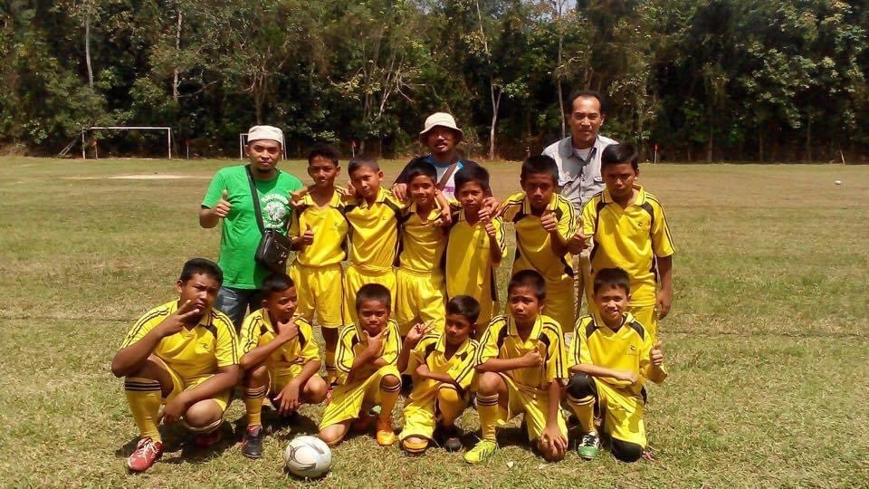

أيا من يدعي الفهم | مشاري راشد العفاسي
My Hobbies
Hobbies play an essential role in my life, allowing me to explore my interests and unwind from my academic responsibilities. My passion for technology fuels my curiosity, driving me to dive into new programming tools and the latest trends in the tech world. I often find myself spending hours researching innovations, experimenting with new coding languages, and exploring various software development techniques. This insatiable curiosity not only enhances my technical skills but also cultivates a mindset geared toward lifelong learning, which I consider vital in today’s fast-evolving digital landscape.
In addition to technology, I am an avid sports enthusiast. Engaging in sports such as badminton, futsal, swimming, and football keeps me physically active while providing an opportunity to bond with friends. Each game is more than just a competition; it's a chance to build camaraderie, strategize, and enjoy the thrill of teamwork. I find immense joy in the adrenaline rush of a close match and the satisfaction of improving my skills over time. Additionally, I enjoy playing video games as a form of relaxation and entertainment. These games allow me to immerse myself in different worlds, challenge my strategic thinking, and connect with friends, often turning a simple game night into a memorable experience.
Furthermore, my hobbies reflect my adventurous spirit and desire for personal growth. I am also a car enthusiast, particularly fond of the iconic 911 car, which represents engineering excellence and performance. My interest extends to watches as well, appreciating the craftsmanship and technology behind each piece. Exploring new technologies and engaging in sports instills a sense of discipline and perseverance within me. Whether it's pushing my limits on the badminton court or learning a new programming framework, I embrace challenges as opportunities for growth. My love for photography complements these interests, as I often document my adventures and memorable moments during travels and outings. Capturing the beauty of the world through my lens allows me to express my creativity and reflect on experiences that shape who I am. In essence, my hobbies enrich my life, providing a balance between relaxation, personal development, and social interaction.